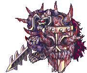
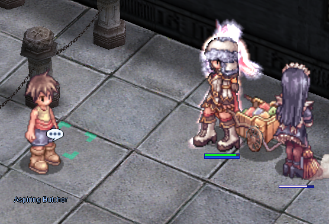
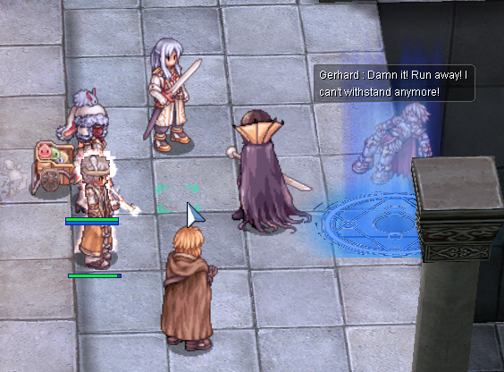
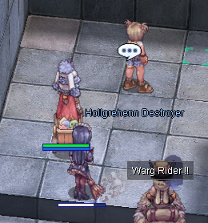
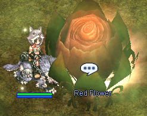

Uploads by Aristiel
This special page shows all uploaded files.
| Date | Name | Thumbnail | Size | Description | Versions |
|---|---|---|---|---|---|
| 17:14, 16 May 2016 | GiantLance.png (file) | 525 bytes | 1 | ||
| 10:45, 5 February 2016 | Oghmap1.png (file) | 29 KB | 3 | ||
| 15:52, 4 February 2016 | Maggot.gif (file) | 2 KB | 1 | ||
| 15:44, 4 February 2016 | Corrupted Steward.gif (file) |  |
25 KB | 1 | |
| 15:41, 4 February 2016 | Grand Chamberlain.gif (file) | 25 KB | 1 | ||
| 15:39, 4 February 2016 | Corrupted Monk.gif (file) |  |
20 KB | 1 | |
| 15:36, 4 February 2016 | Corrupted Soul.gif (file) |  |
119 KB | 1 | |
| 13:19, 4 February 2016 | MG AMDARAIS.gif (file) | 63 KB | 2 | ||
| 13:19, 4 February 2016 | MG GRUDGE.gif (file) |  |
12 KB | 2 | |
| 13:19, 4 February 2016 | MG AGONY.gif (file) | 10 KB | 2 | ||
| 13:18, 4 February 2016 | MG RAYDRIC.gif (file) |  |
6 KB | 2 | |
| 13:18, 4 February 2016 | MG RAYDRIC ARCHER.gif (file) | 7 KB | 2 | ||
| 13:17, 4 February 2016 | MG KNIGHT OF ABYSS.gif (file) | 94 KB | 2 | ||
| 13:14, 4 February 2016 | Khalitzburg.gif (file) |  |
15 KB | 1 | |
| 13:05, 4 February 2016 | BloodyKnight.gif (file) |  | 60 KB | 1 | |
| 10:07, 4 February 2016 | Corrupted Palace Guard.png (file) |  |
2 KB | 1 | |
| 21:32, 3 February 2016 | Amdarais.png (file) | 18 KB | 1 | ||
| 21:32, 3 February 2016 | Grudge.png (file) | 3 KB | 1 | ||
| 21:30, 3 February 2016 | Agony.png (file) | 2 KB | 1 | ||
| 20:53, 3 February 2016 | OGH3.png (file) |  | 471 KB | 2 | |
| 20:51, 3 February 2016 | OGH2.png (file) | 306 KB | 2 | ||
| 20:48, 3 February 2016 | OGH16.png (file) | 230 KB | 1 | ||
| 20:38, 3 February 2016 | OGH1.png (file) | 111 KB | 2 | ||
| 20:30, 3 February 2016 | OGH 15.png (file) | 61 KB | 1 | ||
| 20:29, 3 February 2016 | OGH 14.png (file) |  |
336 KB | 1 | |
| 20:28, 3 February 2016 | OGH 13.png (file) | 138 KB | 1 | ||
| 20:28, 3 February 2016 | OGH 12.png (file) | 226 KB | 1 | ||
| 20:27, 3 February 2016 | OGH 11.png (file) |  | 449 KB | 1 | |
| 20:25, 3 February 2016 | OGH 8.png (file) | 173 KB | 1 | ||
| 20:25, 3 February 2016 | OGH 7.png (file) | 258 KB | 1 | ||
| 20:24, 3 February 2016 | OGH 6.png (file) |  |
297 KB | 1 | |
| 20:24, 3 February 2016 | OGH 5.png (file) |  | 150 KB | 1 | |
| 15:37, 3 February 2016 | High Weapon Box.png (file) | 10 KB | 1 | ||
| 15:36, 3 February 2016 | WoE White Potion Box.png (file) |  |
8 KB | 1 | |
| 15:33, 3 February 2016 | Mastela Fruit Box.png (file) | 9 KB | 1 | ||
| 15:15, 3 February 2016 | EDP.png (file) | 9 KB | 1 | ||
| 15:11, 3 February 2016 | Ygg Berry.png (file) |  |
7 KB | 1 | |
| 15:09, 3 February 2016 | Ygg Seed.png (file) |  |
6 KB | 1 | |
| 15:05, 3 February 2016 | Condensed White Potion.png (file) | 4 KB | 1 | ||
| 06:58, 12 January 2016 | Morse 01.png (file) | 82 KB | 2 | ||
| 06:55, 12 January 2016 | Morse 02.png (file) |  | 112 KB | 2 |
{kind=link}
{kind=link}
{kind=link}
{kind=link}
{kind=link}
{kind=link}
{kind=link}
{kind=link}
{kind=link}
{kind=link}
{kind=link}
{kind=link}
{kind=link}
{kind=link}
{kind=link}
{kind=link}
{kind=link}
{kind=link}
{kind=link}
{kind=link}
{kind=link}
{kind=link}
{kind=link}
{kind=link}
{kind=link}
{kind=link}
{kind=link}
{kind=link}
{kind=link}